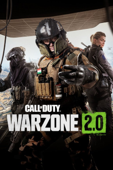
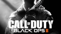
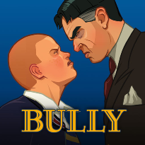
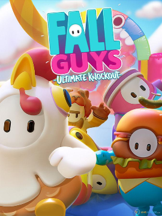
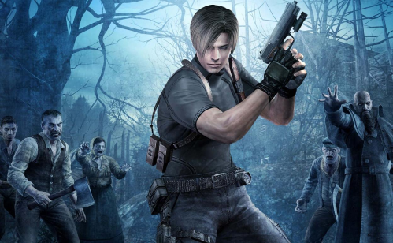

Warzone 2.0
Call of Duty: Warzone 2.0 es un videojuego de Battle Royale gratuito que se lanzó para PlayStation 4, PlayStation 5, Xbox One, Microsoft Windows y Xbox Series X|S. 12 Es una secuela de Call of Duty: Warzone de 2020. El juego es parte de Call of Duty: Modern Warfare II de 2022, pero no requiere la compra de dicho juego. El juego presenta un juego multiplataforma y un nuevo modo de extracción titulado DMZ.Al igual que su predecesor, en el modo de juego principal de Warzone 2.0, Battle Royale, los jugadores compiten en un mapa que se reduce continuamente para ser el último jugador que queda. Los jugadores se lanzan en paracaídas sobre un gran mapa de juego, donde se encuentran con otros jugadores.

Call of Duty:Black ops 2
Call of Duty: Black Ops II es el segundo juego de la saga Call of Duty en presentar la futura tecnología de la guerra, y el primero en presentar historias de ramificación impulsados por elección del jugador, así como la selección de armas antes de comenzar las misiones del modo historia. También ofrece una opción de visualización en 3D.5 Un juego correspondiente, Call of Duty: Black Ops: Declassified, fue lanzado simultáneamente en la consola portátil PlayStation Vita. Dentro de las 24 horas de salir a la venta, el juego recaudó más de $500 millones de dólares. Se había mantenido como el videojuego con el mayor lanzamiento de entretenimiento de todos los tiempos hasta septiembre de 2013, cuando Take-Two anunció que Grand Theft Auto V había recaudado $800 millones en su primer día de lanzamiento

Bully
El juego empieza con Jimmy, su madre y su nuevo padrastro yendo en el auto de este último, Jimmy demuestra gran desaprobación hacia él diciéndole que es calvo, gordo y más viejo que su abuelo, tras esto ellos lo dejan en la escuela Bullworth Academy, donde es recibido por la secretaria del director Crabblesnitch, ella le dice que vaya a verlo. Al llegar a la oficina este le dice que le tiene miedo, pues en sus anteriores escuelas lo expulsaron por lenguaje obsceno, violencia, insolencia, grafitis, etc. Además, le dice que en Bullworth deberá comportarse o sino ellos harán que se comporte.

Fall Guys
Fall Guys es un videojuego de plataformas y battle royale desarrollado por Mediatonic y publicado inicialmente por Devolver Digital y más tarde por Epic Games. Fue anunciado en la E3 2019 y fue lanzado para Windows y PlayStation 4 el 4 de agosto del 2020.El 21 de junio de 2022, el videojuego se lanzó en PlayStation 5, Xbox Series X y Series S, Nintendo Switch, Xbox One, y en la Epic Games Store gratuitamente, al igual que trajo Cross-play y Cross-progression, estas funciones harán que los jugadores puedan jugar con sus amigos sin importar en qué plataforma estén, al igual que continuar con nuestro progreso en cualquier plataforma compatible

Resident Evil 4
Es un videojuego de acción-aventura del estilo survival horror.2Por primera vez en la serie, el ambiente cerrado y lineal se deja a un lado para incluir escenarios más grandes y dinámicos, debido a que la historia se desarrolla en un poblado de España.El sistema de juego es diferente e innovador a comparación de las entregas anteriores de la serie. Lo que más destaca en Resident Evil 4 es la forma de apuntar con las armas, dándole la libertad al jugador de elegir de manera realista a donde se dirigirá su disparo